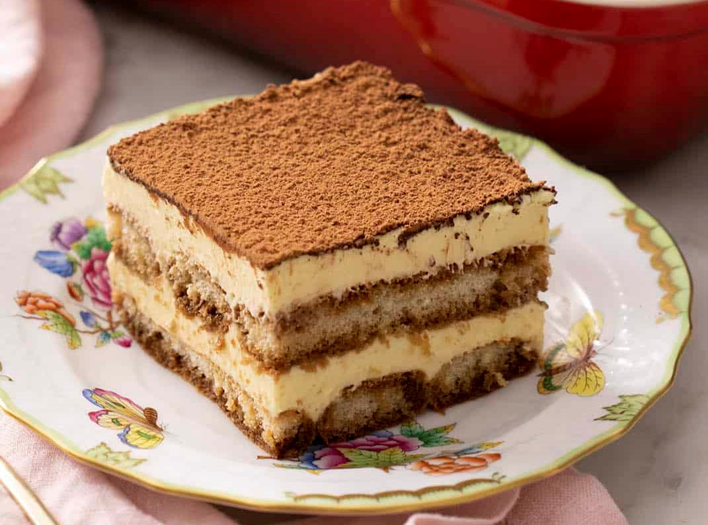

Tiramisu

Ingrediënten
- 3 verse eieren
- 40 g suiker
- 250 g mascarpone
- 20 lange vingers
- 1 kopje sterke koffie (afgekoeld)
- 3 eetlepels cacaopoeder
- scheutje marsala wijn (slijterij)
Bereiding
Splits de eieren. Zorg er voor dat er absoluut geen eigeel bij het eiwit komt.
Mix de eigelen met de suiker tot een licht geel en luchtig mengsel.
Mix de mascarpone er door.
Maak de mixer en kom goed schoon en vetvrij en klop daarna de eiwitten helemaal stijf.
Spatel het eiwit door het mascarpone mengsel.
Roer de wijn door de koffie in een kommetje of diep bord.
Doop de helft van de lange vingers hier een paar seconden in en verdeel over de bodem van de schaal met de gesuikerde kant naar beneden.
Giet ongeveer de helft van het mengsel hierover heen.
Doop de rest van de lange vingers in de koffie en verdeel weer over de schaal.
Giet het laatste deel van het mengsel er over.
Strooi er wat cacaopoeder over en zet in de koelkast, het liefst een hele nacht.